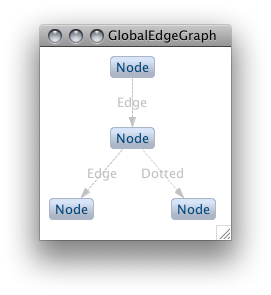

This Eclipse feature provides support for the Graphviz DOT language in Zest: The Eclipse Visualization Toolkit, both as an input and output format. It provides API und UI elements to transform both DOT graphs to Zest visualizations (to be used in Java SWT applications), and Zest visualizations to DOT graphs (to be rendered as image files with Graphviz).
In Eclipse 3.5, add the update site at http://quui.de/updates (Help -> Install New Software... -> Add...) and install the dot4zest feature (from the Zest category).
In the UI, this feature adds two wizards ('New Zest Graph' and 'New Zest Project') under a category labeled 'Visualization':
And a 'Zest Graph' view:
This wizard sets up a Zest project. The project created by the wizard contains a 'templates' folder containing sample DOT files. The DOT files in the 'templates' folder are compiled to Zest graph subclasses automatically, and can be launched as Java applications to view the Zest Graph:
This implements a basic Zest authoring environment using DOT as a DSL, as upon saving the DOT file, the same Zest application can be relaunched, showing the Zest graph created from the changed DOT file. See the section on the graph view below for a way to visualize the DOT without running the generated class.
This wizard creates a new Zest graph subclass. In the first page the container and a graph template are selected, the resulting Zest graph for the template is previewed:

In the second page the DOT representation of the selected template can be customized. After the wizard finishes, it runs the generated Zest Graph to display the result (here customized in the second page):

The generated Zest file will be in the org.eclipse.zest.dot package. To get a compiling result without setting up anything, select the org.eclipse.zest.dot package in the src-gen folder of a Zest project as the container in the wizard (or select it before starting the wizard).
The Zest Graph view listens to changes made to *.dot files in the workspace. The view draws the DOT graphs using Zest and allows for image export of the current Zest graph. When a *.dot file is added to the workspace or altered in an editor, the Zest graph view is updated with the graph created from the *.dot file. For instance, consider a file with the .dot extension, containing the following DOT graph definition:
digraph s{
n1[label="Node 1"]; n2[label="Node 2"];
n1 -> n2[style=dotted label="A dotted edge"]
}
The view will display:
The view contains buttons to load a specific *.dot file, to export the current Zest graph as an image file by calling the dot executable, to layout the current graph, and to re-select the directory containing the dot executable (from left to right). When the image export button is selected, a PDF for the current graph is saved in the directory containing the input *.dot file. In this example, the export looks like this:
This completes the Zest-based DOT authoring environment: if the *.dot file is inside the templates/ folder of a Zest project, the file will both be visualized in the Zest Graph view (e.g. during editing) and compiled to a Zest graph subclass (e.g. to be used in a different application), and can be exported as a PDF with Graphviz.
At the same time the view provides a simple way to visualize *.dot file output of any kind of program, e.g. to visualize and debug internal data structures, results, etc: if a program running in Eclipse outputs any *.dot file in the workspace, the view will be updated with the corresponding Zest graph.
Via the API, DOT can be imported to Zest graph subclasses (*.java files) or Zest graph instances, and Zest graph instances can be exported to DOT or image files.
To import DOT to Zest, the DotImport class is used:
/* The DOT input, can be given as a String, File or IFile: */
DotImport importer = new DotImport("digraph Simple { 1;2; 1->2 }");
/* Compile the DOT input to a Zest graph subclass: */
File file = importer.newGraphSubclass();
/* Or create a Zest graph instance in a parent, with a style: */
Graph graph = importer.newGraphInstance(shell, SWT.NONE);
To export a Zest graph to DOT, the DotExport class is used:
/* For some Zest graph, we create the exporter: */
DotExport exporter = new DotExport(graph);
/* Export the Zest graph to DOT: */
String dot = exporter.toDotString();
/* Or to an image file, via a given Graphviz installation: */
File image = exporter.toImage("/opt/local/bin", "pdf");
The complete sample usage is available in the repository, as well as working DOT input samples.
The DOT import implementation contains experimental animation support, representing animation steps as subgraphs in the DOT input (which if rendered with Graphviz results in a static description of the animation).
For instance, for the input below a Zest animation is created in which the single steps can be executed by clicking the button below the graph:
digraph SampleAnimation {
/* We can specify a Zest layout for the animation here: */
layout=tree // = TreeLayoutAlgorithm
/* Global attributes can be defined for edges and nodes: */
node[label="Node"]
edge[label="Edge" style=dotted]
1;2;3;4;5
/* The single animation steps are marked by numbers: */
subgraph cluster_0{ 1 -> 2 [label="Dashed" style=dashed]}
subgraph cluster_1{ 1 -> 3 }
/* The final animation step needs to be marked with "end": */
subgraph cluster_2_end{ 3 -> 4; 3 -> 5}
}
After the first step:
And the final state of the graph:
The same input file, exported with Graphviz, shows the animation steps as subgraphs:
A possible use case for defining such animations with DOT is to easily create animated course material, e.g. to explain data structures. The same file defining the animation can be used to export a PDF illustrating the steps in a static way.